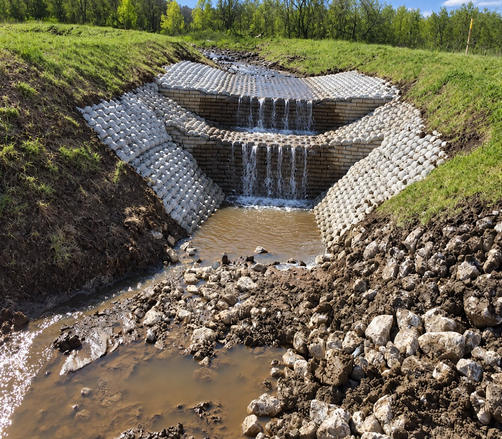
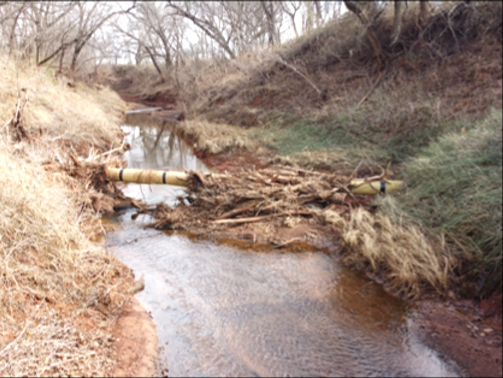
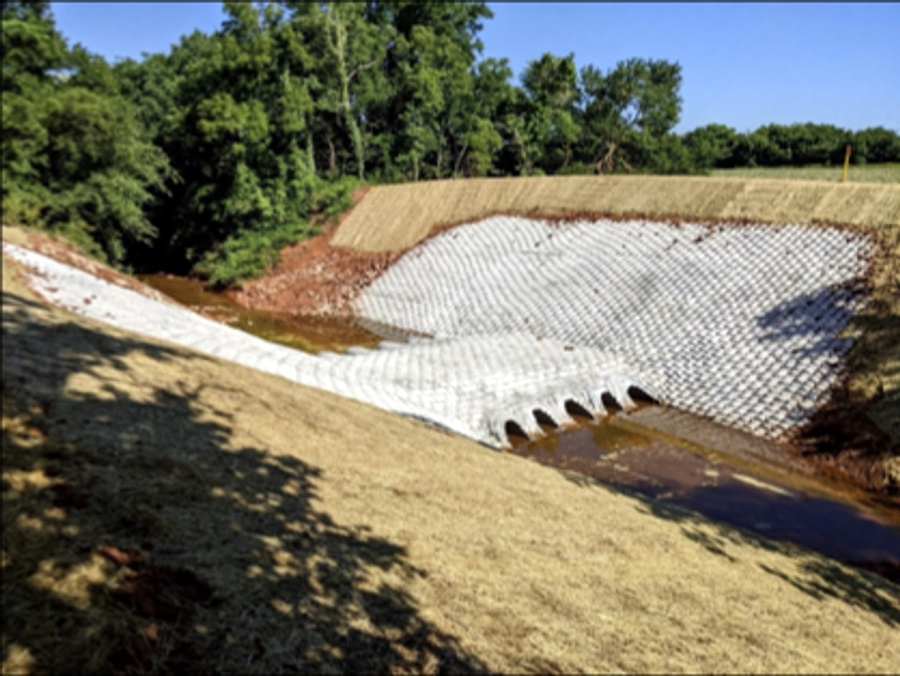
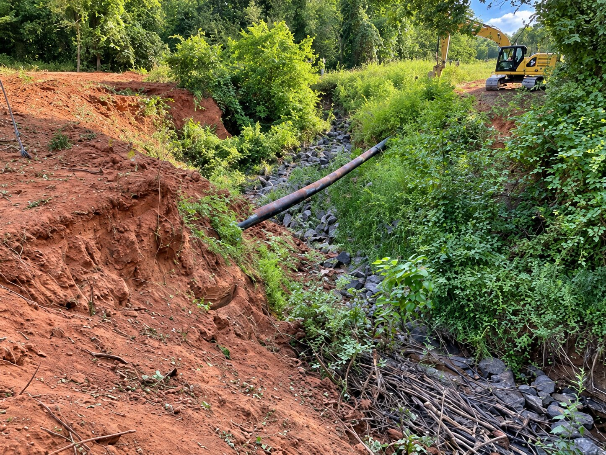
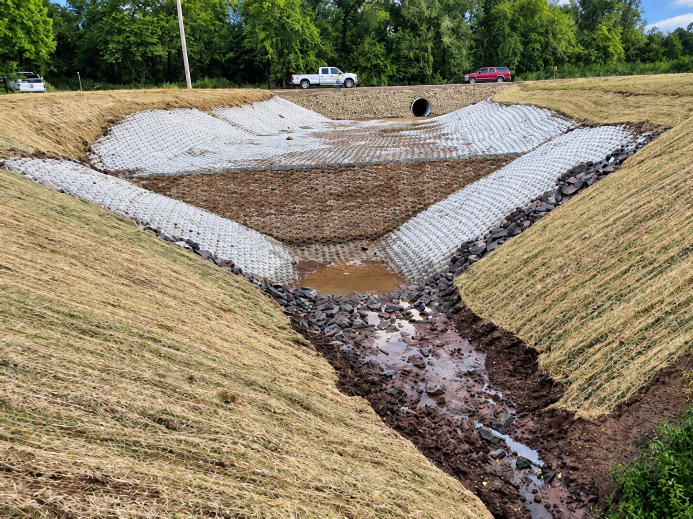
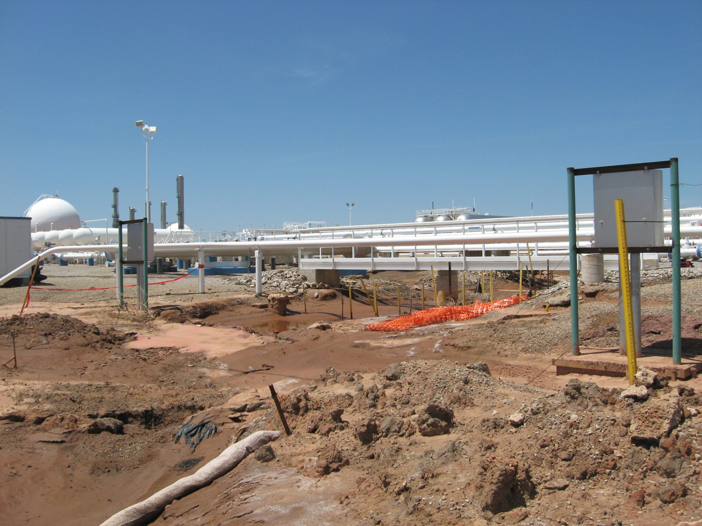
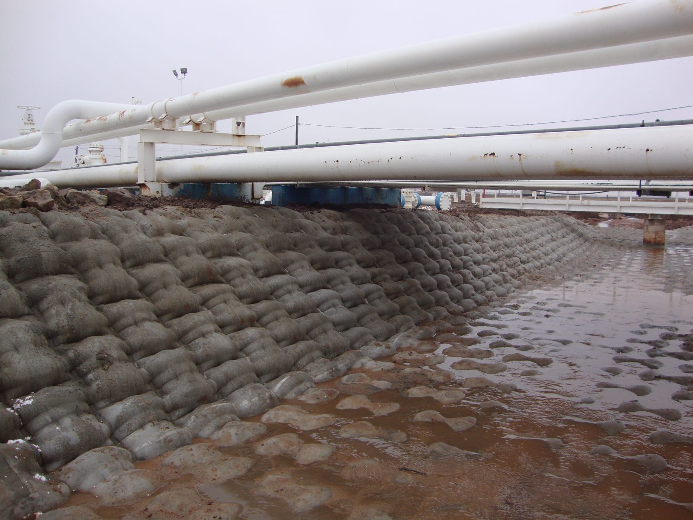

Stormwater systems, drainage channels and urban creeks carry more water, faster, as communities grow. Erosion that starts in a channel ends up at roads, parks, utilities and private property.
What you're seeingWhat's driving itHow we solve it
What you're seeing
Stormwater channels are eroding.
Channel beds are deepening, side slopes are failing and sediment is moving downstream.
What's driving it
More paved area means more runoff arriving faster than the channel was built to carry.
How we solve it
We investigate the channel, engineer a lining that suits the flow, and install it with minimal disruption to the surrounding neighborhood.
What you're seeing
Outfalls are being undermined.
The ground beneath or around an outfall has washed away and the structure is exposed.
What's driving it
Concentrated discharge striking unprotected soil at the point of release.
How we solve it
We design outfall protection matched to the discharge and the receiving channel, then build it.
What you're seeing
Creek banks are failing near roads, parks or homes.
Banks are collapsing, trees are falling into the creek and the edge is moving toward public assets.
What's driving it
Flow concentrated against the bank, often worsened by upstream development.
How we solve it
We redirect the flow where the creek allows it and protect the bank with systems that support vegetation.
What you're seeing
The fix has to clear permitting and environmental review.
Multiple agencies, floodplain requirements and habitat concerns stand between the problem and the repair.
What's driving it
Public projects answer to more reviewers, and a design that ignores them stalls.
How we solve it
We prepare and submit the applications, coordinate with agencies and carry every permit through approval before work begins.
In the field
Before

After
A headcut was cutting its way upstream through open ground, taking more land with every storm. We installed stepped grade control to stop the knickpoint and step the water down safely to the channel below.

Before

After
Debris and high flows scoured this creek crossing until the line beneath it was exposed. We restored the cover and rebuilt the crossing over new culverts.
Before
After
Meandering creeks see changing water levels and flow rates, and they can expose a pipeline quickly. We rebuilt this bank as a stepped wall over the line.
Before
After
Over time, erosion can leave a pipeline spanning a ravine it was never meant to cross. That calls for prompt work: support beneath the pipeline and armoring around it.
Before
After
Flow through this road crossing had cut the bank beside it back toward the road. We rebuilt the bank and armored it where the flow leaves the crossing.

Before

After
Below a roadway, runoff cut this drainage channel deep into red clay and exposed the line running through it. We rebuilt it as a lined channel, from the road culvert down, that holds its grade.
Before
After
The river was taking this bank, and the farmland above it, with every high water event. Five years after the work, the bank is rebuilt and green.

Before

After
Runoff at this processing plant had carved the drainage under the pipe racks into open ditches. We lined the channel to protect the ground the supports stand on and mitigate sediment flow.
Before
After
When a river starts cutting toward a transmission line, the structures beside it are next. We armored the banks and channels to protect the utility infrastructure.
How we work
One team, from site investigation through construction.
Whatever the industry, every project follows the same six steps, and our own people carry it through each one. Nothing is handed off to another firm along the way.